I - Introduction
Kali Linux c'est quoi ?
Kali Linux est une distribution GNU/Linux sortie le 13 mars 2013, basée sur Debian. La distribution a pris la succession de BackTrack et est financée et maintenue à jour par Offensive Security.
Kali Linux est une distribution spécialisée dans la hacking et embarque beaucoup d'outils.
Qui utilise Kali Linux ?
Principalement les hackers mais il y a aussi les gens qui travaillent dans la cybersécurité
II - Les méthodes d'installation de Kali Linux
Sur un ordinateur physique
1 - Allez sur cette page
2 - Cliquez sur le boutton télécharger
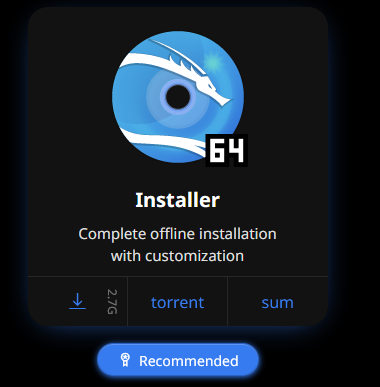3 - Ensuite téléchargez cet outil windows et cliquez sur le boutton de téléchargement
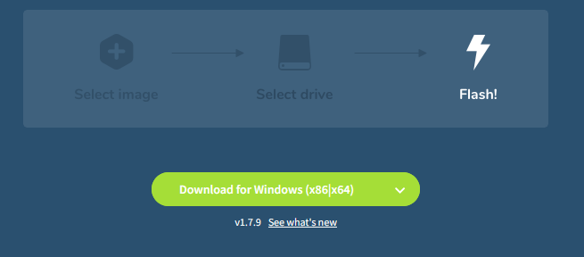4 - Une fois que tout est téléchargé, installez BalenaEtcher
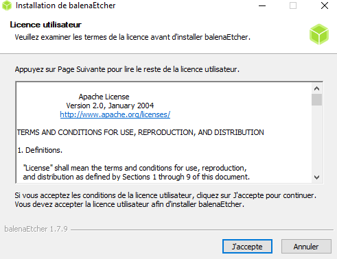5 - Cliquez sur "Flash From File" et choisissez le fichier .iso de Kali Linux
6 - Ensuite, cliquez sur "Select Target" et choisissez la clé USB (minimum 8gb)
7 - Enfin, cliquez sur "Flash"
8 - Une fois le flash terminé, branchez la clé usb sur le pc ou vous voulez installer Kali Linux puis démarrez sur la clé
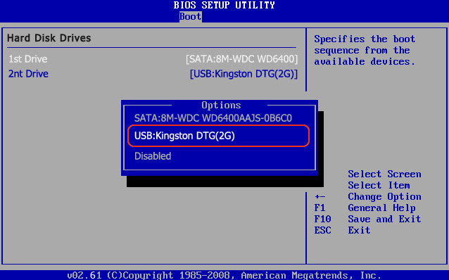Pour savoir comment accèder au bios de votre ordinateur, cliquez ici
Sur une machine virtuelle
1 - Téléchargez VirtualBox ici
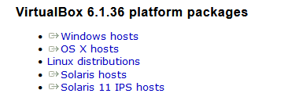2 - Téléchargez Kali Linux pour VirtuaBox ici
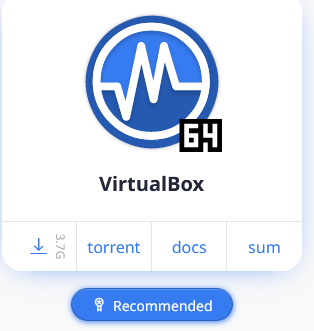3 - Ouvrez VirtuaBox et cliquez sur "importer"
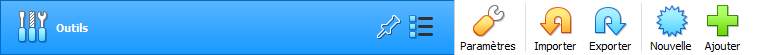4 - Une fois la VM importée, allez dans "configuration"
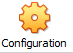Changez la ram si vous pouvez en allouer plus
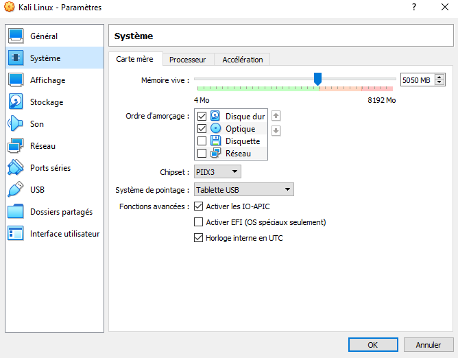Très important, allez dans l'onglet "réseau" et mettez en "accès pas pont"
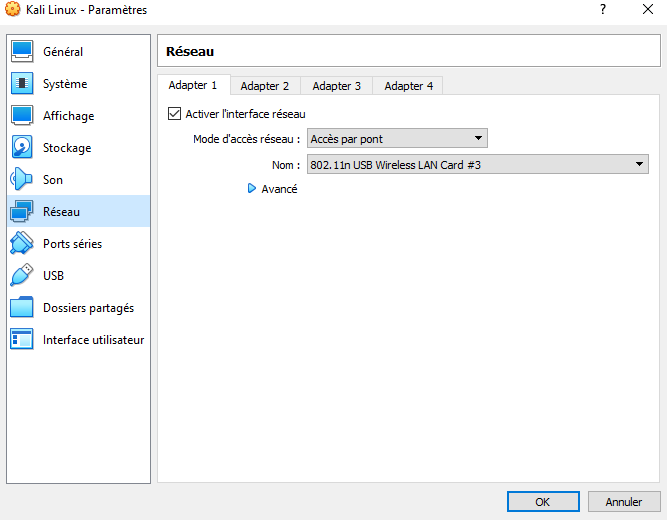Enregistrez les modifications
5 - Démarrez la VM

Le clavier est en qwerty et le user/mot de passe est kali:kali
Rendez-vous ici pour la configuration après l'installation
Sur une clé USB (Kali Live USB)
1 - Prenez une clé usb d'au moins 32gb pour être tranquille niveau stockage
2 - Téléchargez Kali Live ici
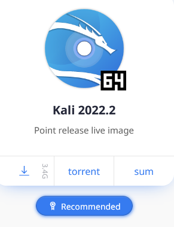3 - Téléchargez Rufus ici

4 - Banchez la clé usb et lancez rufus
5 - Dans l'onglet "périférique" choisissez votre clé usb
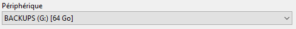6 - Dans l'onglet "type de démarrage" choisissez "image disque ou ISO" et cliquez sur "selection" pour selectionner le fichier iso de kali live
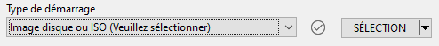7 - Dans l'onglet "persistance" choisissez le maximum (pour une clé de 32gb, ca seras 20gb de persistance)
8 - Une fois que tout est bon, cliquez sur "démarrer" (ATTENTION : cela effaceras tout ce qu'il y a sur votre clé usb !)
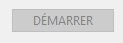9 - Une fois l'installation terminée, banchez la clé sur un pc, démarrer dessus et choisissez l'option "Live USB persistance"
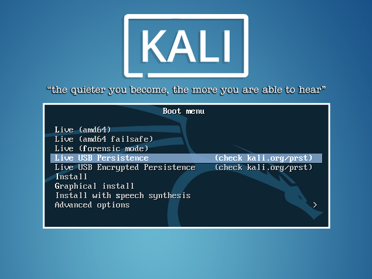Kali Linux WSL2
1 - Lancer un powershell en administrateur
2 - Activer "Virtual Machine Platform" avec cette commande : Enable-WindowsOptionalFeature -Online -FeatureName VirtualMachinePlatform
3 - Activer "Windows Subsystem for Linux" avec cette commande : Enable-WindowsOptionalFeature -Online -FeatureName Microsoft-Windows-Subsystem-Linux
4 - Redémarrer l'ordinateur
5 - Ouvrir un powershell en administrateur
6 - Activier WSL version 2 avec cette commande : wsl --set-default-version 2
7 - Ouvrir le Microsoft Store
8 - Chercher "Kali Linux" dans la barre de recherche
9 - Installer Kali Linux
10 - Lancer un terminal puis taper la commande : kali
11 - Indiquez un nom d'utilisateur et un mot de passe pour kali
Kali NetHunter (android)
1 - Télécharger termux sur le play store
2 - Taper les commandes suivantes :
- apt update -y
- apt upgrade -y
- apt update -y
- apt install wget -y
- wget -O install-nethunter-termux https://offs.ec/2MceZWr
- chmod +x install-nethunter-termux
- ./install-nethunter-termux
Cette opération prend pas mal de temps
Quand il vous demande si vous voulez supprimer le fichier "rootfs" faites "n" puis "entrer"
A la fin, tapez "nh"
Pour démarrer kali nethunter, il faudras taper "nh" ou "nethunter" dans le terminal de termux
Si cela ne fonctionne pas ou pas correctement je vous invite à visionner cette vidéo
III - Après l'installation
Mettre le clavier en français
1 - Appuyez sur la touche WINDOWS et tapez "settings manager"
2 - Allez dans "keyboard" puis dans "layout"
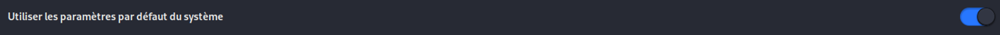3 - Décochez la case "Use system default"
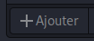4 - Cliquez sur "+ add" et cherchez "french" puis ajoutez le
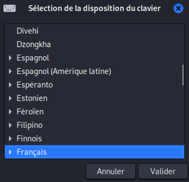5 - Ensuite cliquez une fois sur "english" puis cliquez sur "- remove"
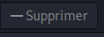Mettre la langue du système en français
1 - Allez dans le terminal
2 - Tapez : sudo dpkg-reconfigure locales
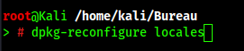3 - Descendez jusqu'as voir "English" puis appuiez sur la touche ESPACE
4 - Descendez encore un peu jusqu'as trouvez "FR_fr-UTF-8" puis appuiez sur la touche ESPACE et enfin sur la touche ENTRER
5 - Allez sur la langue FR et appuiez sur espace
6 - Redemarrez Kali
Mettre à jour le système
1 - Allez dans le terminal et tapez : sudo apt update -y
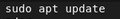2 - tapez ensuite : sudo apt upgrade -y
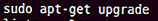Cette opération prend plusieur heures donc soyez patient
3 - Redemarrez Kali